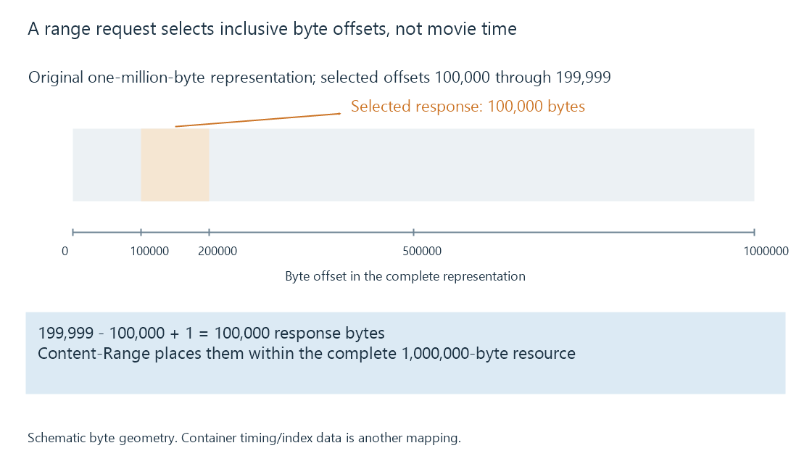

HTTP range requests for media resources
An HTTP range request asks for selected bytes of a resource representation, allowing a media player to retrieve the regions needed for container analysis or playback.
A player can need bytes near the end of a file before it has downloaded the middle. HTTP range requests let it ask for a selected part of a resource representation. This helps obtain indexes, resume transfers and retrieve the encoded data around a seek destination.
The coordinates are byte offsets. The server is not being asked to “play minute twenty” by a Range header.
Inclusive byte intervals
An original illustrative exchange requests part of a million-byte resource:
GET /media/example.mp4 HTTP/1.1
Range: bytes=100000-199999
HTTP/1.1 206 Partial Content
Content-Range: bytes 100000-199999/1000000
Content-Length: 100000
Offsets begin at zero, and both endpoints are included:
199999 - 100000 + 1 = 100000 bytes
The Content-Range describes where the response body belongs in the complete representation. The Content-Length describes the response body length here, not the full movie size. Neither number establishes the duration represented by those bytes.

Two further forms have different meanings:
| Request range | Requested portion of a 1,000,000-byte representation |
|---|---|
| bytes=900000- | From offset 900,000 through the end: 100,000 bytes |
| bytes=-65536 | The final 65,536 bytes: offsets 934,464–999,999 |
| bytes=0-0 | The first single byte |
A suffix request can help a parser obtain information stored near the end. Its usefulness depends on the container layout and the player, not just on the fact that the request is accepted.
The response decides what actually arrived
A range request is a request for optional server behavior. The player must interpret the response status and fields rather than assume the server sent the selected interval.
| Response | Meaning relevant to media retrieval |
|---|---|
| 206 Partial Content | The response supplies a selected range or ranges |
| 200 OK | The server can be supplying the complete representation instead |
| 416 Range Not Satisfiable | The requested range cannot be satisfied for the selected representation |
For a simple unsatisfiable byte-range response, Content-Range: bytes */1000000 can communicate the current complete length. A requested start beyond that length does not identify a bad codec; it identifies a mismatch between the requested coordinates and the resource.
Accept-Ranges: bytes advertises range support. Its absence alone is not a rule that a client can never attempt a byte-range request. The response remains the evidence of what happened.
Container indexes connect bytes to time
To reach a presentation time, the player first needs a mapping from media timing to sample locations and usable decoding access points. It can then retrieve the associated byte regions. Variable bitrate, interleaving, headers and dependencies make that mapping more complicated than multiplying duration by average bitrate.
Suppose an index maps a target to video data at offset 700,000 and an earlier suitable decoding point at 680,000. Starting the retrieval at 680,000 is consistent with eventually presenting the requested later picture. Those offsets are invented teaching inputs, not a rule about Emby's file seeking.
A segmented presentation can also describe byte ranges within one larger object. A URL-addressable segment and a separate physical file are therefore not always the same thing.
Ranges must belong to one representation
Combining the first portion of one file revision with the last portion of another can corrupt the reconstructed byte sequence. HTTP validators, including entity tags, help establish representation identity. If-Range lets a client make a conditional range request: when its validator no longer matches, receiving the complete representation allows it to start from consistent content.
The identity matters for generated media as well as library files. A changed conversion session or replaced resource can have different bytes even when its display title is identical. Successful retrieval of several independent ranges is useful only when those ranges fit the representation the parser is assembling.
See Also
- Progressive download and playback before completion
- Seeking during streaming
- HLS media segments and initialization
- Packet Timestamps